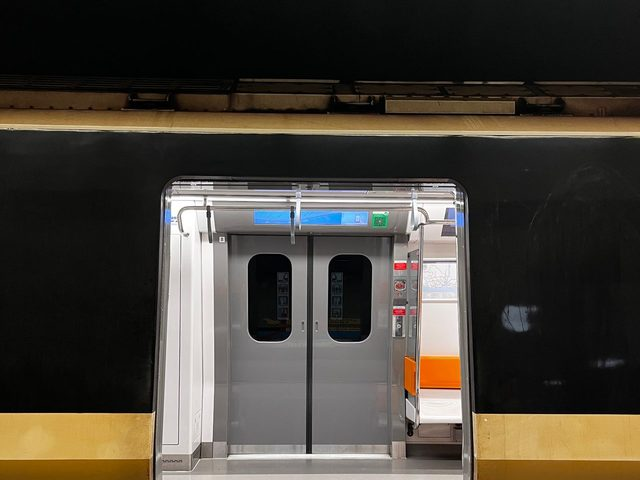
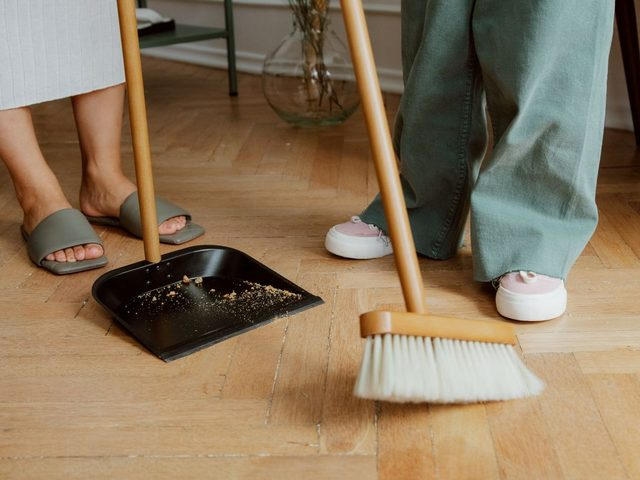
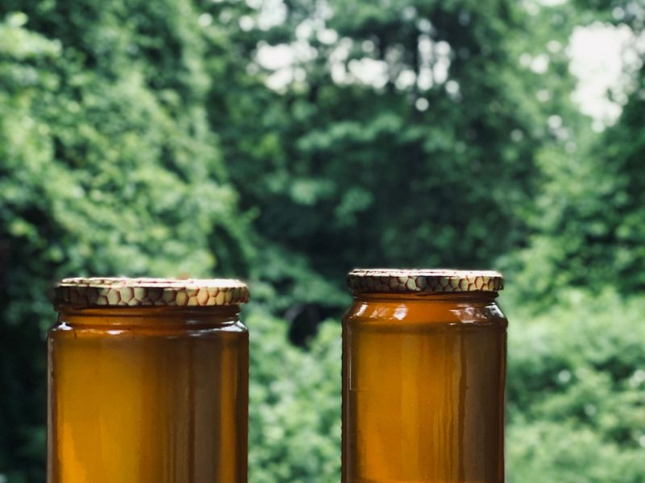
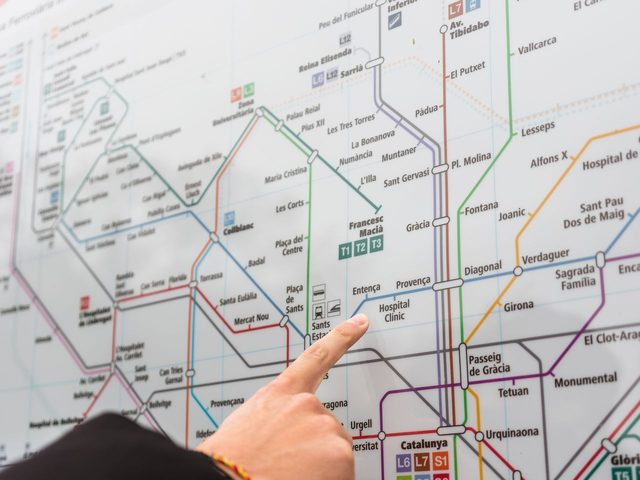

VOCABULARY · WORD UP 單字複習 UNIT 46
S-VI．S 開頭（六）
WORD UP「S-VI」的 44 個字（stress 到 system）。紅色＝要複習，藍色標籤＝WORD UP 標熟記、還要在這裡考對。
共 44 個單字．點 🔊 聽發音
1stressn./v.
壓力；強調
I'm under a lot of stress.我壓力很大。
2strikev./n.
打擊；罷工
三態 strike-struck-struck
The tree was struck by lightning.那棵樹被閃電擊中。
3strongadj.
強壯的；濃的
weak 虛弱的
He is strong enough to lift the box.他夠強壯可以舉起那個箱子。
4strugglev./n.
掙扎；努力奮鬥
She struggled to finish the race.她奮力跑完比賽。

5studentn.
學生
There are 30 students in my class.我們班有 30 個學生。
6studyv./n.
讀書；研究
過去式 studied
I study English every day.我每天讀英文。
7stupidadj.
愚蠢的
That was a stupid mistake.那是個愚蠢的錯誤。
8stylen.
風格；樣式
I like your hair style.我喜歡你的髮型。
9subjectn.
科目；主題
What's your favorite subject?你最喜歡什麼科目？

10subwayn.
地鐵
take the subway
We took the subway in Tokyo.我們在東京搭地鐵。
11succeedv.
成功
succeed in + V-ing
He succeeded in passing the test.他成功通過考試。

12successn.
成功
Hard work is the key to success.努力是成功的關鍵。
13successfuladj.
成功的
She is a successful businesswoman.她是成功的女企業家。
14suchadj.
如此的；這樣的
such a + 形容詞 + 名詞
It was such a nice day.那天天氣真好。
15suddenadj.
突然的
all of a sudden 突然
There was a sudden noise.突然有一個聲音。
16suddenlyadv.
突然地
Suddenly, the lights went out.突然燈全熄了。

17sugarn.
糖
不可數
No sugar, please.請不要加糖。
18suggestv.
建議
suggest + V-ing
I suggest taking the MRT.我建議搭捷運。
19suitn./v.
西裝；適合
Dad wears a suit to work.爸爸穿西裝上班。

20summern.
夏天
summer vacation 暑假
Summer vacation is coming!暑假快到了！
21sunn.
太陽
the sun
The sun is very hot today.今天太陽很大。
22Sundayn.
星期日
We go to church on Sunday.我們星期日去教堂。
23sunnyadj.
晴朗的
It's sunny today.今天天氣晴朗。
24superadj.
極好的；超級的
You did a super job!你做得超棒！
25supermarketn.
超級市場
Mom goes to the supermarket every week.媽媽每週去超市。
26suppern.
晚餐
= dinner
We had supper at seven.我們七點吃晚餐。
27supplyv./n.
供應；供給
supply A with B
The farm supplies us with fresh milk.農場供應我們新鮮牛奶。
28supportv./n.
支持；支撐
My parents always support me.我爸媽總是支持我。
29sureadj.
確定的
be sure of／that；Sure! 當然
Are you sure?你確定嗎？
30surfv.
衝浪；上網瀏覽
surf the Internet 上網
I like to surf the Internet.我喜歡上網。
31surfacen.
表面
The surface of the table is smooth.桌面很光滑。
32surprisen./v.
驚喜；使驚訝
to one's surprise 令某人驚訝的是
What a surprise!真是個驚喜！
33surprisedadj.
（人）感到驚訝的
be surprised at
I was surprised at the news.我對這個消息很驚訝。
34survivev.
存活；倖存
Only one person survived the accident.只有一個人在意外中生還。

35swallowv./n.
吞嚥；燕子
Swallow the medicine with water.配水把藥吞下去。

36swann.
天鵝
A white swan is swimming in the lake.一隻白天鵝在湖裡游。
37sweatern.
毛衣
Wear a sweater. It's cold.穿件毛衣，很冷。

38sweepv.
掃
三態 sweep-swept-swept
Please sweep the floor.請掃地。

39sweetadj.
甜的；貼心的
This cake is too sweet.這個蛋糕太甜了。
40swimv.
游泳
三態 swim-swam-swum；go swimming
Let's go swimming.我們去游泳吧。
41swimsuitn.
泳衣
Don't forget your swimsuit.別忘了帶泳衣。

42swingn./v.
鞦韆；搖擺
三態 swing-swung-swung
The kids are playing on the swings.孩子們在盪鞦韆。
43symboln.
象徵；符號
The dove is a symbol of peace.鴿子是和平的象徵。

44systemn.
系統；制度
The school has a new computer system.學校有新的電腦系統。
FOCUS
重點整理
| 說法 | 中文 | 例子 |
|---|---|---|
| succeed / success / successful | 成功（動詞／名詞／形容詞） | succeed in winning ／ a big success ／ a successful man |
| suggest + V-ing | 建議做… | suggest going home |
| such a + 形容詞 + 名詞 | 如此…的… | such a cute dog |
| surprise / surprised | 驚喜 ／ 人感到驚訝 | a big surprise ／ I was surprised. |
| sudden / suddenly | 突然的 ／ 突然地 | a sudden rain ／ Suddenly it rained. |
| support | 支持 | support my dream |
| go swimming | 去游泳 | go swimming in the sea |
strike-struck、sweep-swept、swim-swam-swum、swing-swung。